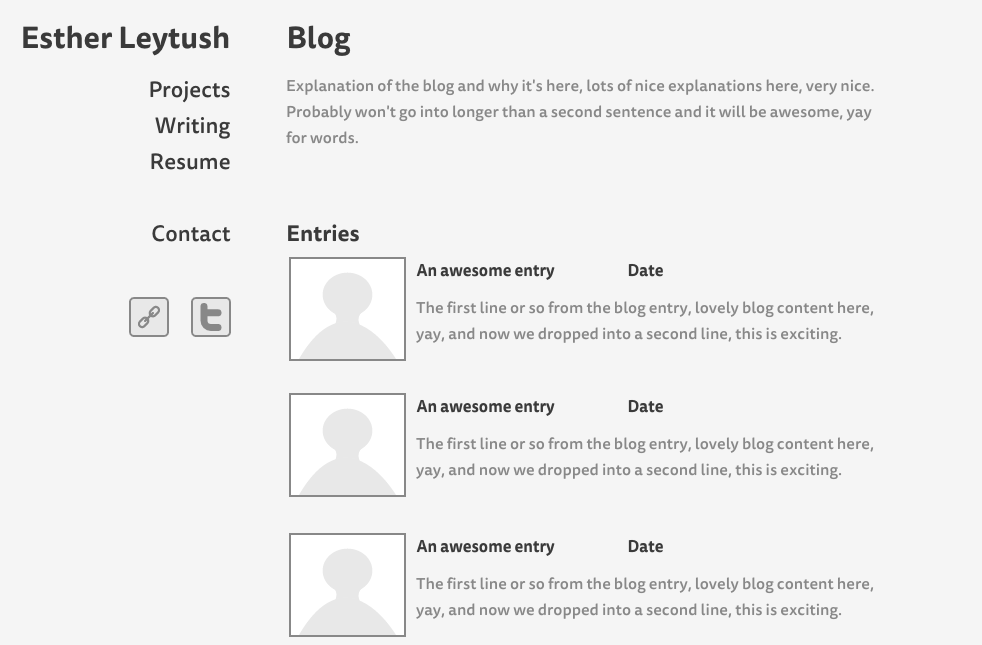

I spent today completely rehauling the HTML on my personal site. Originally my blog landing page and post template looked like this:


I thought I'd have a nice visible navbar on the side, variety of links, filling up the page in this lovely manner.
Then I saw Kerrison Garcia's About Me page, and I immediately became extremely angry with myself.
I'm a minimalist! I shouted at myself. I love things like this Zen Habits site! How many times do I need to read and reread The Life-Changing Magic of Tidying Up in order to practice the minimalism I choose?! It's not like it's an onerous choice, since the less there is of something the more profoundly I love and enjoy it. When am I going to learn?
Not to mention, why was I going to try to make so many visually complex elements that would probably require a lot of CSS to make them beautiful, when I already know that I am not passionate about the way things appear on the page and prefer the back-end side of web development? Setting aside the question of effort, wouldn't this send an incorrect message to my prospective employers, the intended eventual audience for this site?
So I ended up revamping my entire site. And I am feeling a lot better for it. There's a much clearer and cleaner hierarchy of pages now. It's more obvious what I need to flesh out, like my Contact Me page, and I am feeling a lot more comfortable with how my site is going to appear visually. I still need to work out the way I intend elements to look on the page and I am actually looking forward to doing that.